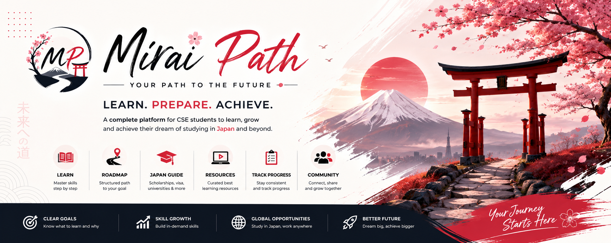

Mirai Path is your premium interactive portal to conquer international scholarships, master the Japanese language, refine core computer science skills, and construct an elite tech career in Japan.

A holistic approach combining global tech practices with precise cultural training to bridge the gap between academic education and international recruitment.
Master English fundamentals, standard communication, and key tech stack specifications required to shine in global screening interviews.
Demystify visa categories, the local tech market, corporate culture, standard lifestyles, and typical cost of living estimations.
Receive systematic application timelines for MEXT (embassy/university tracks) and premier graduate school research criteria.
Targeted pathways spanning algorithmic structures, Linux commands, Git commands, cloud storage, and responsive web systems.
Curated channels, recommended handbooks, online repositories, and problem-solving channels to cut out the search noise.
Craft custom English-Japanese resumes, create impactful portfolio landing pages, and master active job portal search dynamics.
A step-by-step master plan designed for CSE students. Click on any roadmap node below to view details, track your progress, and check off learning milestones.
Detailed description on why this module is important for CSE students planning a career in Japan.
An administrative blueprint. Discover scholarship pathways, student visa requirements, local living budgets, and essential pre-departure checklists.
The Ministry of Education, Culture, Sports, Science and Technology (MEXT) launches the official application circular. Prepare your academic scripts, letters of recommendation, IELTS transcripts, and preliminary research abstracts.
The local Japanese Embassy reviews the documents. Shortlisted applicants undergo standard written screening tests (including rigorous English and Japanese tests) and a panel interview.
Passing Embassy candidates must actively contact professors in top Japanese national universities (e.g., Tokyo University, Tokyo Tech, Kyoto University) to secure a formal Letter of Provisional Acceptance.
MEXT head offices in Tokyo perform the final review of recommended applicants. Upon positive selection, university placements and official award letters are dispatched.
Secure the special student visa at your embassy, book MEXT-sponsored flights, and land in Japan to begin your research/language course!
Save hours of search. Instantly explore our handpicked list of YouTube channels, standard books, documentation, and mock coding tests.
A persistent, live tracking widget showing your overall preparedness. Synchronizes automatically when you update your learning status inside the roadmap above.
Total roadmap completion status
A reference portfolio. Explore technical project archetypes built by CSE students. Get ideas to formulate your academic portfolios for professors or employers.
A premium developer portfolio featuring smooth scroll anims, custom terminal interface elements, and deep Japanese translation switchers.
A complete command-line interface mimicking Unix-like file directories, using raw memory allocations, structures, and pointer math in C.
A lightweight automated web scrapper crawling Tokyodev and JapanDev. Compiles fresh new English-friendly entry-level jobs into spreadsheets weekly.
A serverless real-time web application where students log in with Google Auth to practice typing Japanese in specialized chat rooms.
A lightweight web API using an open source neural summarization engine. Refines dense research drafts into neat, readable MEXT abstracts.
Join a passionate, dedicated community of CSE scholars preparing for Japan. Team up for programming contests, critique each other's research proposals, solve JLPT quizzes, and review portfolio profiles in real time.
Join Facebook Community